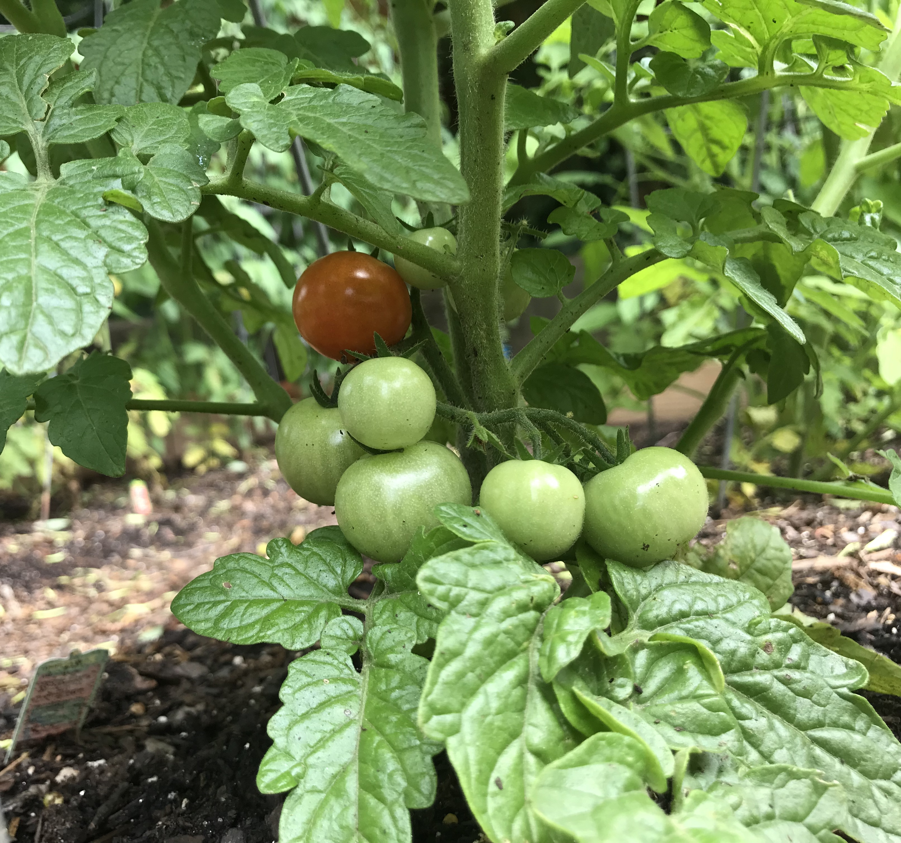

Discover the joys of gardening and cooking what you sow!
Contact me: mark.rosenkrans@gmail.com
Early in the season


---LIST OF RECIPES HYPERLINKED---
BROILED TOMATOES AU GRATIN
Cook bacon until slightly crisp, drain and set aside. Saute onions in that pan until soft. Mix the bacon, onion, cheese, and spices. Preheat the broiler. Arrange the tomatoes on an oiled broiler pan and sprinkle the top with salt and pepper. Top each tomato slice with some of the bacon mixture and broil the slices just until the cheese melts. Serve hot. Makes about 8 servings (unless you love them as much as we do, then, about 6).


My name is Mark Rosenkrans and I have had an urban garden for 6 years. This season, I decided to try growing many things I have never tried before. Planting in two separate locations in Atlanta, I've learned the hard way how to deal with pests of all types. This has only made me appreciate and love this hobby even more.